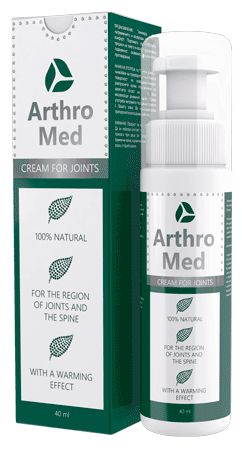

Artículo leído
por más de 16.730 personas
por más de 16.730 personas
¡Hola, amigos! Quiero compartir mi historia con todos ustedes. Mi madre tiene 70 años y, a diferencia de muchas mujeres de su edad, es alegre y quiere disfrutar cada segundo de su vida. Sin embargo, los años le pasan factura. A pesar de estar constantemente moviéndose de un lado para otro, un día su salud la decepcionó.

Mi madre y yo vivimos en diferentes ciudades, por lo tanto, no siempre puedo ayudarle a controlar su bienestar. Sin lugar a duda es una mujer independiente. Sin embargo, tiene una personalidad un tanto aventurista. Sigue yendo al centro de la ciudad donde la gente de su edad se reúne regularmente para bailar. Por cierto, hay unos cuantos hombres mayores que quieren ser sus novios, pero no tienen mucho éxito con ella.
Pero no es el asunto en cuestión. Una tarde la llamé como de costumbre. Estábamos hablando sobre diferentes temas cuando noté cierta tristeza en su voz. Le pregunté qué había pasado, pero el carácter obstinado de mi madre la mantuvo en silencio.
Seguí preguntándole durante toda la semana hasta que reuní a los miembros de mi familia y nos dirigimos a su casa. ¿Saben qué? ¡Ella estuvo sin salir de casa todo este tiempo! Ni siquiera tenía suficientes fuerzas para ir al supermercado.

Cuando llegamos a su casa era un día festivo. Parecía deprimida porque ya no podía disfrutar de su afición - bailar. Resultó ser que ella había querido ir al centro a bailar como solía hacer. Cuando estaba saliendo del autobús, hizo un movimiento raro y se torció el pie.

Unas monjas le ayudaron a volver a casa. Por supuesto, ella no llamó a la ambulancia. Pensó que pronto todo volvería a estar bien, pero el problema persistió. Además, sus articulaciones comenzaron a doler. La alegría y el deseo de bailar desaparecieron.
Mis hijos y yo la animamos como pudimos, pero fue difícil hacer que se sometiera a tratamiento. Mi esposo la llevó al hospital donde le recetaron varios ungüentos y un calentamiento diario de sus articulaciones. Nos alegramos de que ella comenzara el tratamiento. Sin embargo, pronto nos dimos cuenta de que el caso era difícil. Teníamos que volver a nuestra casa que estaba en otra ciudad pero, ¡¿quién iba a llevar a mi madre al hospital todos los días para que ella pudiera seguir su tratamiento?!
Al principio, tratamos de encontrar un trabajador de cuidado de ancianos, pero mi madre no estaba dispuesta a contactar con extraños. Por lo tanto, comenzamos a buscar opciones alternativas en línea. Buscamos un remedio que pudiera ayudarle a deshacerse rápidamente del dolor articular, ¡y sin causar efectos secundarios terribles!
¡Y lo encontramos! ¡El bálsamo ArthroMed para el dolor articular! Es un producto completamente natural y el fabricante garantiza un resultado positivo.
Tuve que tomarme un pequeño descanso y quedarme con mi madre durante una semana. El bálsamo llegó rápidamente y ella comenzó a usarlo al instante. ¡Asombroso! Justo después de 2 días de usar el bálsamo, el dolor se mitigó y mi madre volvió a caminar libre y fácilmente.
Me dijo que volviera a casa, pero aún así siguió contándome cómo se sentía por teléfono. Después de un mes, se sintió 20 años más joven. Sus articulaciones dejaron de crujir y doler. No solo podía caminar hasta el supermercado, sino que además seguía yendo a bailar y rompiendo los corazones de sus fanáticos ancianos.

Ahora mi madre tiene 71 años y sigue disfrutando de la vida cada día que pasa. Valora la vida y la aprovecha al máximo. Los vigorosos ancianos están locos por ella y las mujeres mayores le envidian. ¡Estoy increíblemente feliz de tener una madre así! Es un modelo a seguir para mí. ¡Creo que todos deberían respetar y cuidar de sus madres como ellas lo hicieron por ustedes! Y, si tienen dolor articular, dejen el problema en manos del bálsamo ArthroMed. ¡Aquí hay un pequeño video casero que muestra a mi mamá sana y feliz bailando!
Comentarios a la historia:
Por favor, no usen lenguaje ofensivo y no hagan publicidad. ¡Gracias!
Alicia 15.10.2019
Yo también estoy bastante preocupada por mi madre. Su madre es asombrosa. Mi madre es menos activa y, a veces, ni siquiera puede ir al supermercado debido al dolor articular. Quiero comprarle este bálsamo.
María Campos 16.10.2019
No lo creerán, pero tuve el mismo problema con mi espalda. No tenía energía o interés en la vida, perdí toda esperanza, pero de repente vi este gel ortopédico. Es increíble, sugiero que todo el mundo lo pruebe.
Cristina 16.10.2019
Vaya, es bastante activa. Menos mal que hubo un final feliz. Mi madre se cayó mientras caminaba por la calle y se quedó tumbada durante media hora. Era un día laborable y la calle estaba vacía. Nadie podía ayudarle. Ella logró ponerse de pie y cojeó a casa :(( Tengan cuidado...
Sara Sifontes 17.10.2019
He estado usando este gel durante seis meses. Curó mi artritis en dos semanas y media, y ahora siempre lo tengo en mi botiquín de primeros auxilios por si acaso.
Elena 18.10.2019
Tengo dolor de articulaciones, sin mencionar a mi madre. Es hora de hacer algo. Oí por ahí que la mermelada ayuda bien.
Lorena 19.10.2019
Llevé a mi madre a su médico de cabecera y le dijo que el dolor articular a su edad era normal. Le recetó unos medicamentos. Ahora estoy pensando si debería comprarle este bálsamo o no. Creo que debería hacerlo, ya que parece ser orgánico, a diferencia de las pastillas que están llenas de productos químicos.
Irene 19.10.2019
Chicas, le compré este bálsamo a mi madre. Ha estado usándolo durante 3 semanas y dice que ahora se siente mejor.
Victoria 20.10.2019
Creo que las mujeres de esa edad no deberían bailar, ya que puede ser peligroso. ¡Tienen que caminar cerca de sus casas y no ir demasiado lejos! Esta es solo mi opinión.
ArthroMed
Desháganse del dolor articular
rápidamente y para siempre
Estadísticas del sitio web
| Visitantes hoy: | 1521 personas |
| Visitantes del sitio web: | 246 personas |
| Bálsamo comprado por: | 9856 personas |